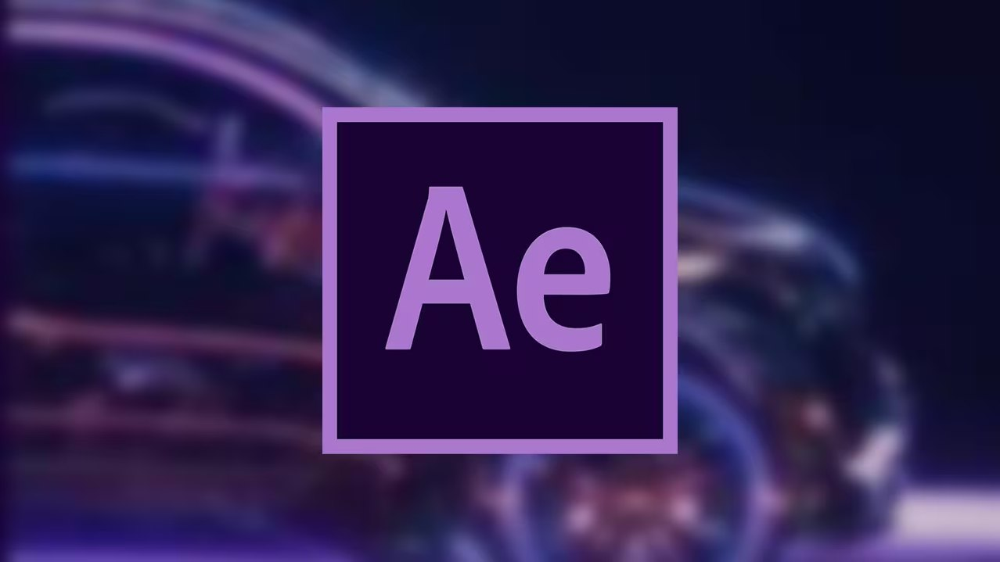

Вышла новая версия After Effects
В новой версии After Effects упростили работу с 3D моделями, теперь их можно добавлять в проект напрмяую из blender'а без сторонних плагинов
Подробнее 10.10.2025В новой версии After Effects упростили работу с 3D моделями, теперь их можно добавлять в проект напрмяую из blender'а без сторонних плагинов
Подробнее 10.10.2025
В новой версии плагина добавили более обширный функционал для анимации текста и изображений
Подробнее 09.10.2025Запуск бета версии должен был произойти 8 октября, но дату релиза перенесли, однако финальный всё ещё релиз заплонирован на 11 ноября